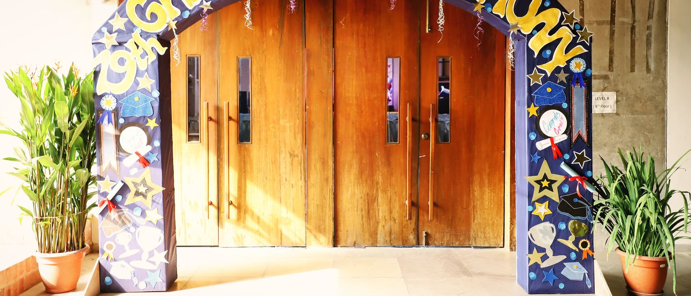
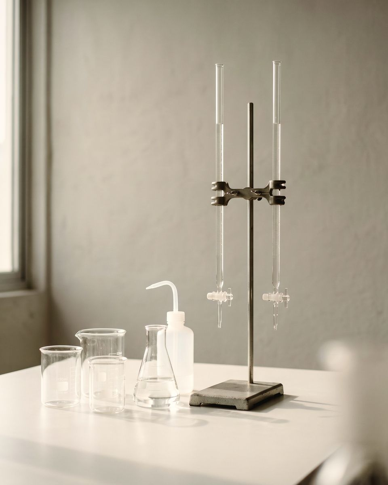

O Level
May–June 2026
67 in every 100 O Level grades were A* or A. Almost one in three was an A*.
- A*32%
- A35%
- B19%
- C10%
- Others4%
Classes VIII to XII. Electives are chosen in Class VIII and carried to Cambridge O Level, with at least six subjects. AS and A Level follow, with at least three subjects at A Level.

Every O Level student sits English Language, Bengali and Mathematics, and chooses the rest. The grid shows each subject and the level at which the school teaches it.
Subjects
O Level AS Level A Level
The school confirms the subjects it offers each year. If one subject matters to your child's plans, call the line for Classes VII to XII before you choose.
From the school's results summary for the May–June 2026 exam session, as on the home page.

Class VIII
After the second-semester examinations, students choose the subjects they will carry to O Level. The school says its aim in the Senior stage is to balance knowledge, understanding and skills.
O Level
English Language, Bengali and Mathematics are compulsory; the rest are chosen from the grid above. The Cambridge pathway explains how the three levels fit together.
After O Level
Students who finish O Level can continue to AS and A Level. Admission to Class XI is based on the school's mock examinations and the O Level result. Read about AS and A Level.
The ring shows how the O Level grades were shared out in this year's Cambridge exams, sat in the school's own hall.
May–June 2026
67 in every 100 O Level grades were A* or A. Almost one in three was an A*.
Exams at home
O Level and A Level students sit their Cambridge exams in the school's own hall, in a building they know.
For the exam series and registration dates, call the line for Classes VII to XII, listed below.
The Results page has the AS and A Level rings as well, and the competitions the school has published results for.
From the school's results summary for the May–June 2026 exam session. "Others" means all grades below C.
Vice Principal
Class VI to Class XII
Teacher-in-Charge
Class VIII to Class XII
Counsellor
For every class; Student support has career guidance, letters and transcripts too
Call the line for Classes VII to XII, listed above, or come and see the building.
Students applying up to Class IX sit a written test in English, Bengali and Mathematics.
The Principal and the parents meet for an interview. The result comes by telephone.
Class X and Class XI
Admission to Class XI, for AS and A Level, is based on the mock examinations and the O Level result. For entry to Class X, call the line for Classes VII to XII before you apply.
In Class VIII, at the end of the second-semester examinations. The school sets a minimum of six subjects at O Level, three of which are compulsory.
At least six at O Level: English Language, Bengali and Mathematics (Syllabus D), plus electives. At A Level the minimum is three.
The school confirms the subjects it offers each academic year. If a particular subject matters to your child's plans, call the line for Classes VII to XII, listed above, before you apply.
Call the line for Classes VII to XII, listed above, and ask for the dates of the next exam series and how to register through the school.
Admissions
Call the line for Classes VII to XII first; the office confirms the day. Ask to see the classrooms, the laboratories and the exam hall.